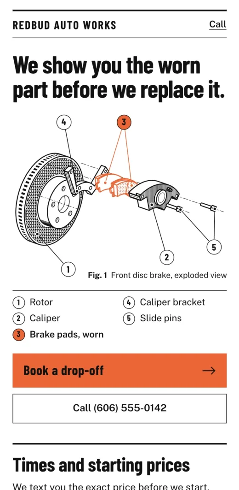
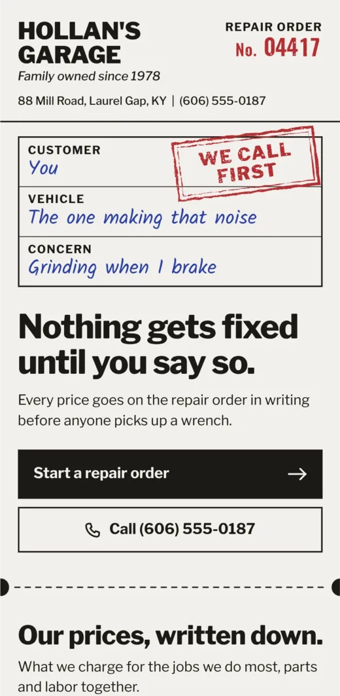
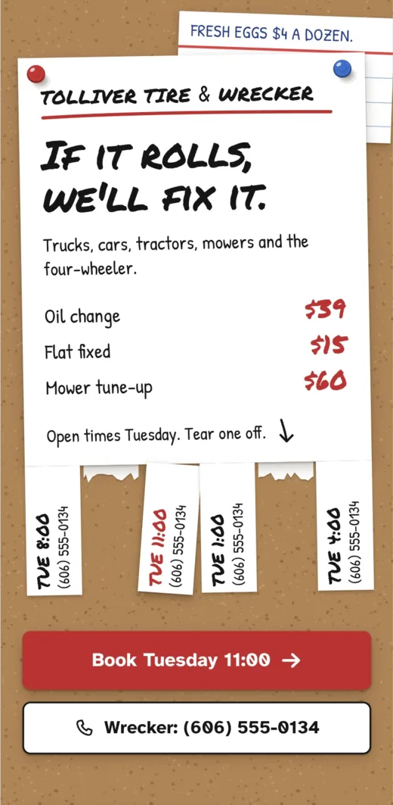

Sample sites
Seven landing pages for made-up local businesses, each in its own style. Every one is built for phones first and works on a desktop too. Pick one to open the live page.
Auto repair
-

Redbud Auto Works Laid out like a repair manual, with an exploded brake drawing and numbered callouts. -

Hollan's Garage A carbon-copy repair order, filled in by hand and stamped in red. -

Tolliver Tire & Wrecker A flyer on the feed-store corkboard. Tear off a tab to book a time.